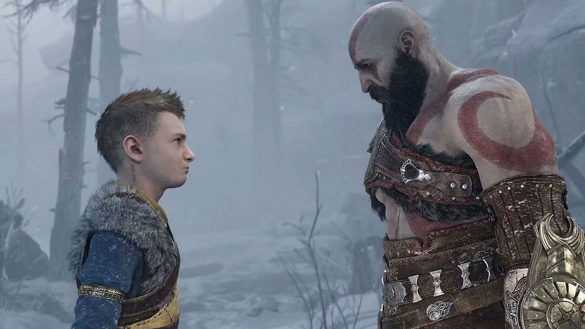

God of War, Kratos'un geçmişinin izlerini silmeye çalıştığı bir başlangıç yapıyor. Daha ilk dakikalardan itibaren karakterin hal ve hareketinden, davranışlarından bunu net bir şekilde anlıyorsunuz. Kasvetli ve bir o kadar da üzücü bir başlangıç yaptığımız oyunun kilit noktası basit bir görevle başlasa da çok kısa bir sürede aslında işin hiç o kadar da basit olmadığını anlıyorsunuz. Hikayenin ana odağı ise merak unsuru üzerine kurulmuş. Oyunun hikayesi bu bilinmezliğin etrafında o kadar güzel ilerliyor ki döndüğünüz her virajda, edindiğiniz her bilgide hem Nordic Mitolojisinden bilgiler alıyorsunuz hem de bu hikayenin ipuçları karşınıza çıkıyor.

God of War her ne kadar seriye yeni bir başlangıç yapsa da aslında köklerine fazlasıyla bağlı olan bir devam oyunu. Bu devam oyununda Kratos'un oğlu Atreus ile girdiği macera oynanışa yeni dinamikler getirdiği gibi aslında oyunun çehresinde de büyük bir değişim yaşanmış. Günümüz oyun dinamiklerini fazlasıyla benimseyen, ona göre şekillenen ve yere gerçekten de çok sağlam basan bir oyun olduğunu daha ilk dakikalardan anlıyorsunuz. Hikaye odaklı olmasının yanı sıra oynanış arka plana itilmemiş ve modern dinamikler God of War'un o sevdiğimiz aksiyon yapısıyla çok güzel bir şekilde bağdaştırılmış.
Kratos ve Atreus arasındaki inişli çıkışlı baba - oğul ilişkisi, oyunun hikayesini her zaman yukarıda tutuyor. Yani önemli bir ara sahne olmasa bile karakterlerin arasındaki diyaloğun sürekli işlediğini görüyorsunuz. İşin içine Mimir'in girmesi ile birlikte bu anlatı çok daha kuvvetli bir yapıya bürünüyor ve oyunun her anından keyif almaya başlıyorsunuz. Yani alalade geçtiğiniz ve hiçbir düşmanın yer almadığı anlarda bile bu diyalog yapısının ne kadar etkileyici olduğunu anlamanız için yeterli oluyor.